South Leonida Real Estate: прохождение миссии GTA 6
Опубликовано:
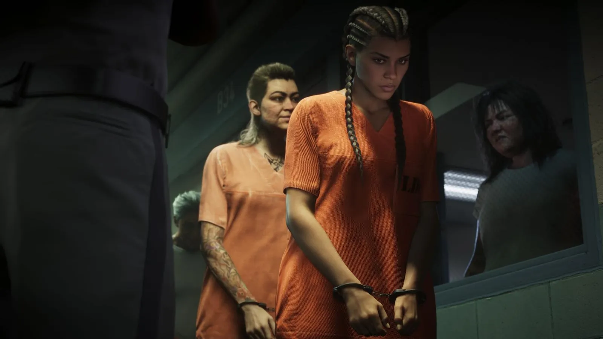
- Миа снова зовёт Лусию в тот самый дом — и банда M7 увозит её прямо на глазах. Чтобы вернуть мать, Лусии приходится поработать риелтором для главаря M7 Терро, а потом с оружием разобраться во внутренней грызне банды.
- Глава 3, миссия 6 из 26. Играем за: Лусия.
- Награда: $2 000 от Мии — приходят через несколько игровых дней.
Миссия коротко
| Глава | 3. Tits Ass Drug Money |
| Номер в сюжете | 6 |
| Играем за | Лусия |
| Кто даёт | Миа |
| Где начинается | офис Мии в Хэмлете — записка на двери |
| Условие | после Mami Knows Best |
| Награда | $2 000 от Мии — приходят через несколько игровых дней |
| Переиграть | нельзя — сохраняйтесь вручную |
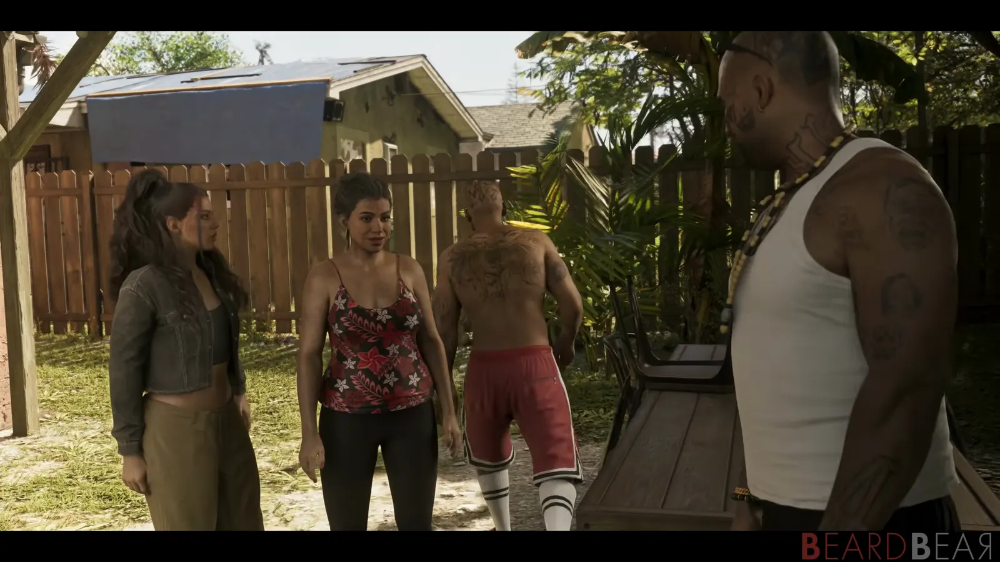
Где начинается
Прохождение по шагам
- Поезжайте к дому и обыщите его в поисках Мии.
- Выйдите на улицу и следуйте за машиной, не попадаясь на глаза.
- Обойдите здание в переулке пешком и войдите через южную дверь.
- Уговорите банду и садитесь за руль.
- Отвезите главаря по объектам, которые показывает Миа.
- Идите за Мией через дом на задний двор.
- Отбейтесь от бойцов M7, а когда Вайпер возьмёт Мию в заложники, — стреляйте в него.

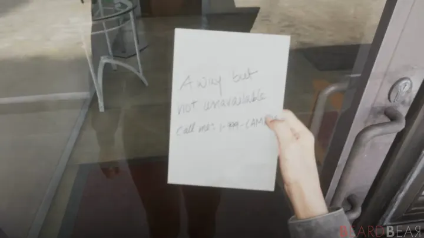

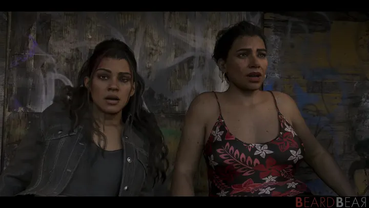

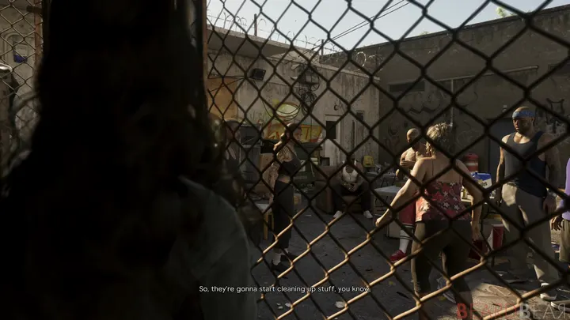

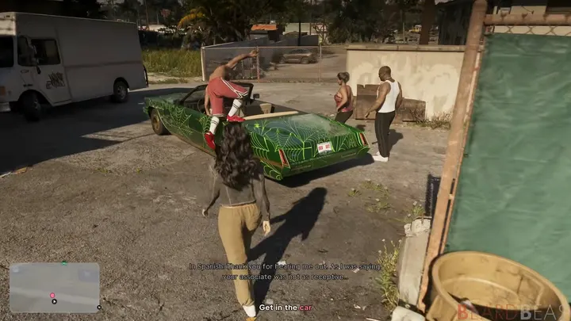

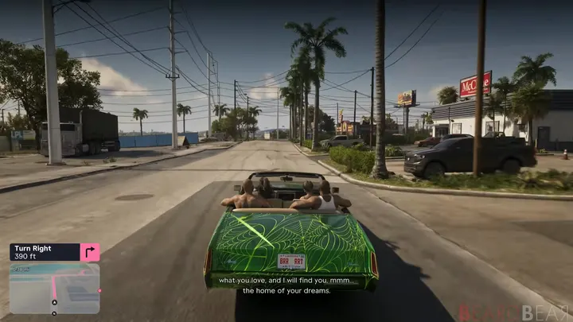

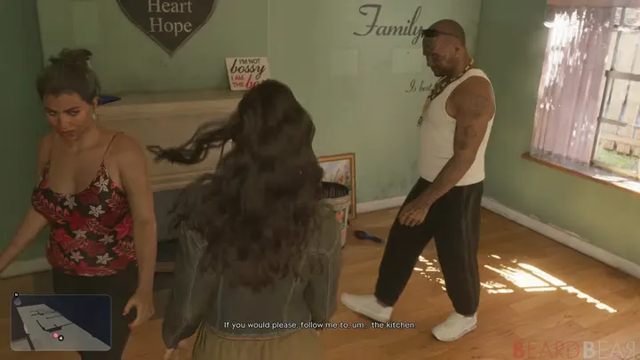

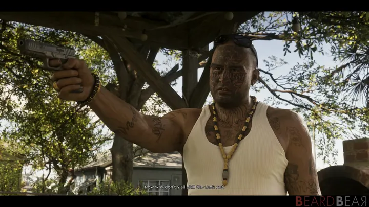

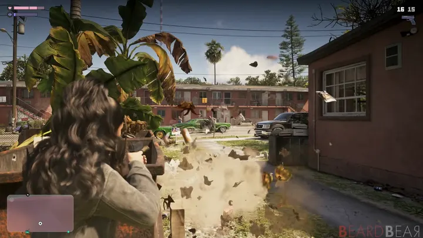

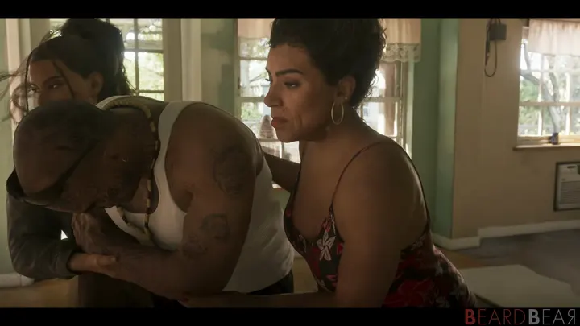
Советы
- При слежке держите дистанцию: стрелка над машиной должна оставаться белой.
- Потеряли машину похитителей — не страшно: Миа позвонит и скажет, где она.
- У Лусии в начале только пистолет — подбирайте оружие с врагов (например, автомат KZ-59 у людей Вайпера).
- Когда Вайпер держит Мию в заложниках, стреляйте, пока он говорит, — или дождитесь, пока Миа ударит его локтем.
- Награда приходит не сразу — не ищите её сразу после миссии.
Подробности и секреты
- Миа ждёт контакта с Лусией несколько игровых дней после Mami Knows Best; старт — записка на двери её офиса в Хэмлете (GTABase, gta6bugs, theclick).
- Вайпер — правая рука Терро, который пытается захватить банду (wiki.eso-ui, planetgta6).
- Комиссия Мии — $2 000 — приходит через несколько игровых дней (wiki.eso-ui, planetgta6, gta6notebook).
Что можно пропустить
Пропустить нечего.
Частые вопросы
Сколько платят за South Leonida Real Estate?
$2 000 — Миа переводит их через несколько игровых дней.
Как не потерять машину в South Leonida Real Estate?
Держитесь так, чтобы стрелка над машиной оставалась белой; красная — вас заметили.
Как начать South Leonida Real Estate?
Пройдите Mami Knows Best и дождитесь, пока Миа свяжется с Лусией (это может занять несколько игровых дней). Старт — записка на двери её офиса в Хэмлете.
Как спасти Мию от Вайпера?
Выстрелите в Вайпера, пока он говорит, или дождитесь, пока Миа ударит его, и стреляйте тогда.
Источники: PowerPyx, «GTA 6 South Leonida Real Estate (Meet Mia) Walkthrough», 18–19.11.2026; GTA BOOM, GTABase, Sportskeeda, MetaForge, wiki.eso-ui, planetgta6, gta6-help, gta6notebook, gta6bugs, theclick — South Leonida Real Estate, 19–28.11.2026. Кнопки указаны для PS5, в скобках — Xbox. Названия миссий — как в английской версии игры.